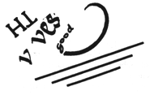
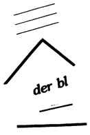

Brief commentary, new slants, current scholarly finds are invited for our Alerts section. Poets and scholars are equally welcome to comment.
No Rule of Procedure: H.D. and Open Poetics by Alicia Ostriker
MASQUERADING: EDNA ST. VINCENT MILLAY AND NANCY BOYD by Deborah Woodard
The Activity of Writing by Trinh T. Minh-ha
An essential characteristic of the versification in Trilogy is its lightness. If you hold one of the great monuments of meditative/visionary poetry in English up to your mind's eye --Paradise Lost or The Prelude, say-- what do you see? Solid blocks, pillars of language, weighty-looking, mighty-looking; one might even say intimidating. If you hold them to the mind's ear, what do you hear? Blank verse paragraphs. Organ tones. Sententious sentences. A strong, energetic, relentless flow of verse in the long line, the pentameter line, which since the late 16th century has been the standard vehicle for public poetry; the line in which tragedy, weighty narrative, and moral discourse of all sorts take place; the line, in sum, of poetic authority. If we look and listen to H.D.'s male cohorts the visual solidity has broken up but the sound of power and authority remain, the sea-surge modulating into the didact in Pound, the liturgical, magisterial tones of Eliot.
Hold H.D. up to the eye and ear and we have something quite different, something which includes a great deal more space, more silence around the words as if pausing were as important as speaking. . . rather like a still small voice: not "authoritative" but intimate. For the lines are first of all short and slight--three stresses to the line, sometimes four, quite often only two, seldom (until later in the poem) five; and the unstressed syllables tend to outnumber the stressed ones. The voice has a definite forward momentum ("persistence," it tells us in WDDF 6 , is its virtue) in its run-on lines and enjambed leaping of stanza breaks, as well as its long suspended sentences, but it is also full of pauses, hesitations, little loopings of repetition and qualification.
What does this aspect of Trilogy' s music--the combination of forward momentum with lightness and hesitation--contribute to the poem's meaning?
Ultimately we are being invited to trust not a still point outside of ourselves, transcending this world, but our own interiority.
And what of rhyme? Here again there is a balancing, and this is one of the poet's most important and subtle techniques. Trilogy is, one might say, a poem that is neither rhymed nor not-rhymed. To the casual reader it will not sound rhymed, for there is no rhyme scheme in it, no recurrent abba or whatever, and because H.D. is a mistress of the inconspicuous off-rhyme, as well as of all sorts of interior sound linkages. Listen to the opening of "Walls" for a few of the threads of sound. We have (with brackets for interior rhyme-words):
(here) there / (your) square / colour / hare. . . (there as here), enter / doors, (here) there, endures, (everywhere) air. And later, fissure / endure / fire / floor / terror / ember / what for? Note the contrasting sound-and-meaning cluster of purpose / lapis / papyrus. . . stalks us / overtakes us / teach us; and again room / gloom as against Luxor bee. . . prophecy. . . sky. . . eternity. Among the alliterative and assonantal constructions we have gone / guns, p ursue / p ur p ose, p rophecy, p a p yrus, t omb / t emple, sh ri ne / sk y , ru in / roof / room gloom.
Alicia Ostriker is the author of Stealing the Language: The Emergence of Women's Poetry in America, University of Michigan Press. Her new poem collection, Green Age, is just out from University of Pittsburgh Press. The complete text of this talk will be published in the forthcoming essay collection, Signets: Reading H.D., edited by Susan Stanford Friedman and Rachel Blau DuPlessis, University of Wisconsin Press.
Masquerading:
Edna St. Vincent Millay and Nancy Boyd


Maybe this is one of the reasons we don't like Edna. If women hadn't written gushy romance-plot poetry for so many years, Ransom might have been forced to address Mind Loy or H.D. Instead, Millay played right into his hands with her histrionics, her "poetess" act. Her flamboyant public guises, as Greenwich Village bohemian, and, later, as prima donna
of the poetry reading circuit, made her--as Richard Wilbur has remarked--the most thespian of poets.

Visuals in this piece by Susan Bee, co-editor with Mira Schor of
M/E/A/N/I/N/G. . . . Neither entirely personal nor purely historical, a mode of writing is in itself a function. An act of historical solidarity, it denotes, in addition to my/the writer's personal standpoint and intention, a relationship between creation and society. Dealing exclusively with either one of these two aspects, therefore, proves vain as an approach. So does the preaching of revolution through a writing more concerned with imposing than raising consciousness regarding the process by which language works, or regarding the nature, activity and status of writing itself. . . .
No radical change can occur as long as writing is not recognized, precisely, as a mode of social inscription or as "the choice of that social area within which the writer elects to situate the Nature of (her)/his language." (R. Barthes). This calls for a conception of writing that can no longer naïvely be reduced to a means
of expressing a reality or of emitting a message. To lay emphasis on
expression
and on
message
is to forget that, even if art is said to be a "window on the world," it is only "a sketched window." (V. Shklovsky). And just as sketched windows have their own realities, writing as a system by itself has its own rules and structuring process.
The ABC lesson says that for letters to become words and for words to take on meanings they must relate to other letters, to other words, to the context in which they evolve--be it verbal or non-verbal--as well as to other present
and
absent contexts. (Words are think tanks loaded with second- and third-order memories that die hard despite their ever-changing meanings.) Thus, writing constantly refers to writing, and no writing can ever claim to be
free
of other writings. . . .
So where do you go from here? Where do I go? And where does a committed woman writer go? Finding a voice, searching for words and sentences: say some thing, one thing or no thing; tie/untie, read/unread, discard their forms; scrutinize the grammatical habits of your writing, and decide for yourself whether they free or repress. Shake syntax, smash the myths and, if you lose, slide on, UNEARTH some new linguistic paths. Do you surprise? Do you shock? Do you have a choice?
from
Woman Native Other,
just published by Indiana University Press. Filmmaker, writer and composer, Minh-ha's works indude
En miniscules
(poems), Le Meridian, Paris, and her most recent film,
Surname Viet Given Name Nam,
premiering this October in San Francisco.
go to this issue's table of contents

 --Trinh T. Minh-ha,
--Trinh T. Minh-ha,